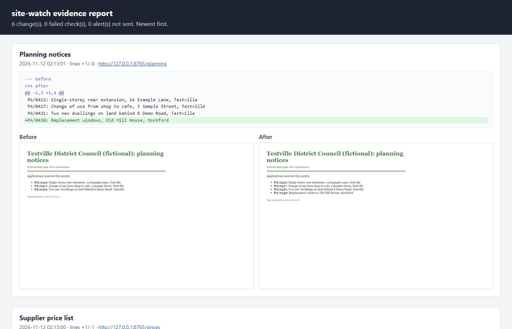
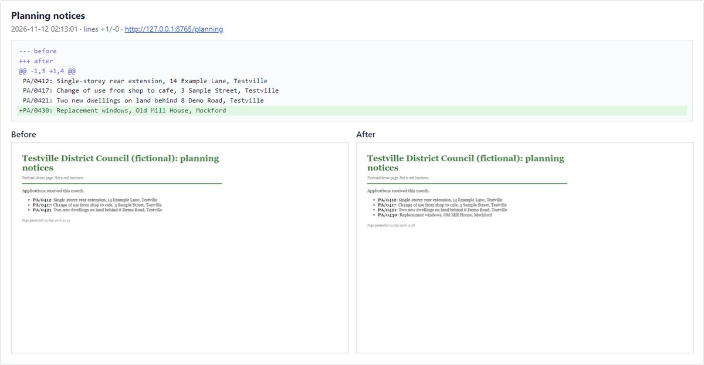

The problem
A business needs to know when a supplier price list, a council notices page or a stock page changes, but checking by hand is slow and easy to forget. When something does change they need proof of what the page said before and after.
What it does
- Loads each page in a headless browser and waits for scripts that fetch data after load
- Compares only the part of the page you choose, with regex rules to ignore timestamps and other noise
- Saves before and after text, a diff and page screenshots for every change
- Sends alerts by email and webhook, or writes them to files in dry-run mode
- Builds an HTML evidence report in one folder that can be copied anywhere
- Records timeouts, HTTP errors and missing page sections as failed checks, never as false changes, and keeps checking the other pages
See the sample output
This is the real report the tool produced from the sample run.
The report comes from fictional sample pages served on a local test server, so no real website is contacted.
Screenshots
The address in these screenshots is a local test server. The demo runs against fictional sample pages on your own computer, so no real website is contacted.


How to run it
python -m venv .venv && .venv\Scripts\activate && pip install -e ".[test]" && python -m playwright install chromiumpython demo/run_demo.pysite-watch -c watches.json check --dry-runFull instructions are in the project’s README.
Tools used
- Python
- Playwright (Chromium)
- SQLite
- pytest
Honest limits
- It compares visible text, not layout, colours or images. A change that only affects how a page looks is not detected.
- It does not log in to sites or fill in forms.
- It does not get past CAPTCHAs or bot blocking.
- Failed checks are logged, recorded and shown in the report, but no alert is sent for them.
- Content that a script adds without any network request is only read if you set
wait_fororsettle_seconds. - Screenshots stop at 20,000 pixels from the top of the page. Chromium cannot capture very tall pages in one image (in testing, 300,000 pixels worked and 700,000 did not), so site-watch caps the height. The text of the whole page is still compared, so a change further down is still detected; it is just not in the screenshot.
- A page that keeps making network requests never goes quiet, so each check of it waits the full 10 seconds before reading.
- A removed watch keeps its history in the report. Adding it back, or changing the URL of an existing name, compares against the old snapshot.
- Watch names are cut to 60 characters for folder names, so two names that only differ after that count as the same.
- The evidence path in an alert is relative to the data folder on the machine that runs site-watch. Email alerts carry the files as attachments; webhook alerts do not.
- Times are local time with no time zone. Email over implicit TLS (port 465) is not supported; use STARTTLS.
- One process runs the checks one page at a time. It is meant for tens of pages, not thousands.
- Evidence and screenshots are kept until you delete them.
View the source for this project
All data in this sample is fictional.